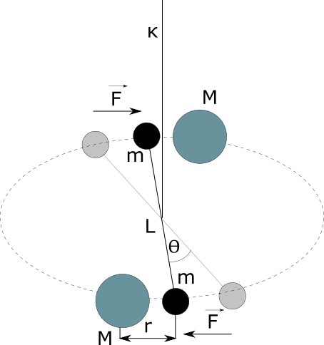

Henry Cavendish
10 October 1731 – 24 February 1810
Creator of: Gravitation constant experiment
Cavendish experiment
The experiment uses a torsion pendulum. On the suspended wire there are two identical masses \(m\). At a distance \(r\) from them there are two equal static masses \(M\), which are designed to attract masses to each other. Attraction twists the pendulum by the \(\Theta\) angle, creating a moment of force \(\bar{M}\) proportional to the angle of the arm swing. The momentum will by equalt to:
$$\bar{M} = -\kappa \theta $$
On the other hand, the moment of causing force can be determined by the arm length and the pulling force by:
$$\bar{M} = F \frac{L}{2}$$
Because we have two arms, the moment of force will be twice as large.
$$\bar{M} = FL$$
This two momentums are the same, therefore:
$$\kappa \theta = FL $$
Knowing Newtons gravitional force wy can modify ouer equation to:
\begin{equation} \label{eq:C1} \kappa \theta = G\frac{mM}{r^{2}}L\end{equation}
we can determine the moment of the wire's direction from the equation:
$$T = 2\pi \sqrt{\frac{I}{\kappa}}$$
The moment of inertia of the smaller balls is:
$$I = \frac{mL^{2}}{2} $$
Puting this to above equation \(T\) nad extracting \(\kappa\) we get:
$$\kappa = \frac{2\pi^{2}mL^{2}}{T^{2}} $$
Seting this to equation \eqref{eq:C1}, and extracting \(G\), will give us
\begin{equation} \label{eq:C2} G = \frac{2\pi^{2}r^{2}L}{MT^{2}} \theta \end{equation}
Torsion pendulum example
Data collected from experiment:
$$T = 498 s$$
$$\Theta = 0.31^{\circ} \sim 0.0054 rad$$
$$M = 1500 g = 1.5 kg$$
$$m = 38.3 g$$
$$r = 46.5 mm = 0.0465 m$$
$$L = 50 mm = 0.05 m$$
Puting this data to equation \eqref{eq:C2}, will give the result of:
$$G = 3.0976 \cdot 10^{-11} \frac{m^{3}}{kg s^{2}}$$
Current value calculated in 2014 is:
$$G = 6.67408(31) \cdot 10^{-11} \frac{m^{3}}{kg s^{2}}$$